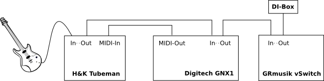
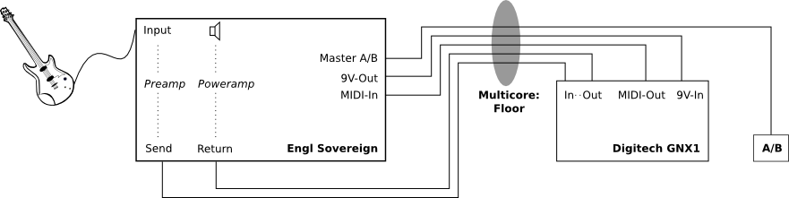
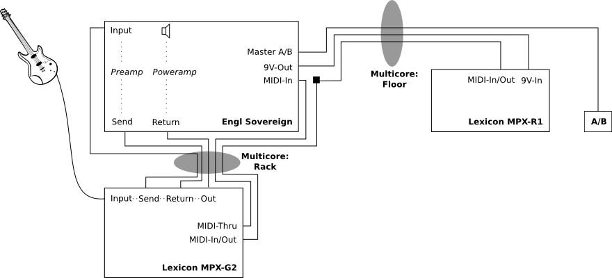

- Preamp-Kanal und Effekt-Preset mit einem Tritt schalten
- Zwei Gesamt-Lautstärken (um sich bei Soli vom Hintergund abheben zu können)
- Möglichst wenig Kabel-Chaos
Ziel (1) wird jeweils durch das Midi-Interface des Verstärkers/Preamps erreicht: Es reagiert auf die Program Change-Nachrichten des Effektgeräts und speichert für jede Preset-Nummer den zugehörigen Preamp-Kanal. Die Bedienung ist denkbar einfach, man wählt ein Preset am Effektgerät an, stellt den gewünschten Kanal am Preamp ein und drückt den "Speichern"-Knopf. Wenn das Preset das nächste Mal angewählt wird, stellt das Midi-Interface automatisch den gespeicherten Kanal ein.
Ziel (2) ist im Engl durch die zwei Master-Kanäle (A/B) bereits eingebaut, der Master-Kanal kann durch einen Fußschalter gewählt werden. Im mobilen Setup mit dem Tubeman kommt dafür der vSwitch zum Einsatz: er senkt im Normalbetrieb die Gesamtlautstärke passiv etwas ab, diese Absenkung kann auf Fußtritt abgeschaltet werden – der Ton wird lauter.
Ziel (3) erledigen zwei von GRmusik angefertigte Multicores.

Abbildung 1: Mobiles Setup – Tubeman.
Der Signalweg geht einfach der Reihe nach durch Preamp, Effektgerät und A/B-Volumen.

Abbildung 2: Kleines Setup – Engl mit Digitech.
Das Digitech hängt im Effektloop des Verstärkers. Alle Verbindungen (Send/Return, Midi, Stromversorgung und A/B-Fußschalter) werden über ein Multicore geführt.

Abbildung 3: Großes Setup – Engl mit Lexicon.
Der Signalweg geht vom Instrument zunächst ins Lexicon (z. B. für Kompressor). Über den Effektloop des Lexicon geht das Signal durch den Preamp, kommt über den Effektloop des Engl zurück ins Lexicon (z. B. für Chorus) und gelangt schließlich über den Poweramp in den Lautsprecher.
Das Lexicon bietet die Möglichkeit, mit dem Floorboard über ein (vollbelegtes) Midi-Kabel verbunden zu werden, und so In+Out über nur ein Kabel abzuwickeln. Deshalb muss die Verbindung zwischen Floorboard und Lexicon direkt erfolgen, weil das Engl Midi-Interface diese (nicht standardkonforme) Übertragung nicht unterstützt. Vom Midi-Thru des Lexicons werden die Midi-Befehle dann weiter an den Engl geleitet, um den Preamp-Kanal passend zu schalten.
Die Stromversorgung für das Floorboard ist gleich wie beim Digitech, somit kann das selbe Floor-Multicore in beiden Setups verwendet werden (die Kanäle für Send/Return bleiben im großen Setup einfach unbenutzt).